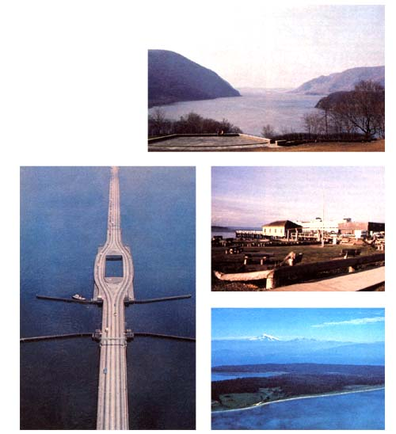

Four disputes settled by environmental mediation. CLOCKWISE FROM RIGHT. Consolidated Edison wanted to build a giant Hudson River hydropower plant in the side of Storm King Mountain (left bank) that would use water pumped up into a massive highland reservoir. Environmentalists opposed the facility on aesthetic and ecological grounds .... The ferry terminal at Port Townsend, Washington needed to be replaced by a larger landing facility, but local citizens strongly disagreed about where to locate one .... Portage Island, which lay with the boundaries of the Lummi Indian reservation, was supposed to be a public park. Indians who didn't like that idea tried to block access by any outsiders .... The four-lane bridge secured by floating pontoons-on Seattle's old Interstate 90 was too small to handle the booming area's traffic. However, people had been arguing about where to run a new extension since 1964!